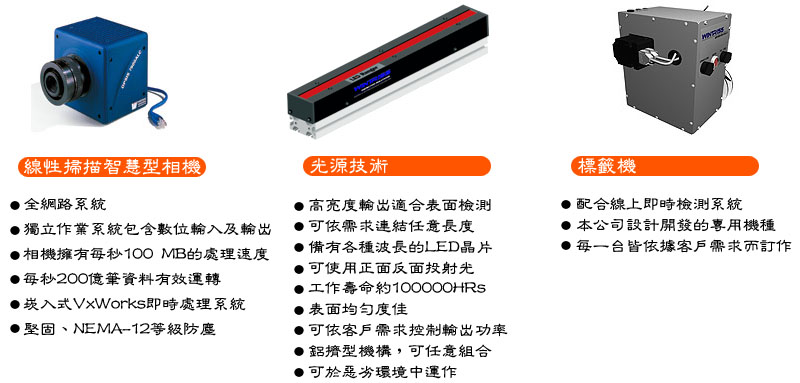
介紹OPSIS 7500 SMART CAMERA 內建資料處理單元，使用 FPGA 處理大量影像資料，此型智慧型線性相機在相機內便能分析處理缺陷。
規格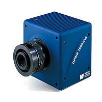智慧型相機內建可程式功能，經由此功能擷取資料後由 100M BASE 的高速網路速度傳輸到電腦端，不用像傳統檢測相機需要影像擷取卡或轉換擷取軟體來做影像處理動作，既耗時又增加電腦負荷，智慧型相機內建 FPGA 跟 POWER PC，可以獨立或是同時與電腦處理較困難的檢測來達到完美系統效能。
利用 Motorola Power PC Microprocessor 作即時影像分析及處理，並有獨特的 Camera control System，這些獨特的設計都可以使攝影機獨立處理及分析影像，分析完成後只將缺陷資料及影像傳送回主系統，因此主系統負擔極輕。整套系統以分工合作方式完成缺陷擷取及資料處理，堪稱目前最新式的系統架構。
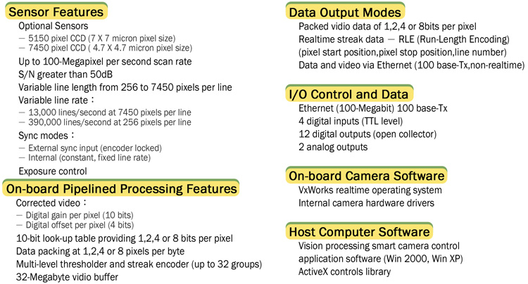
除了需要高效能的智慧型攝影機負責檢測以及資料分析處理外，光源的應用技術對於表面瑕疵檢測的產業來說更為重要，而光源的應用又可區分為照光設備和光源投射技術兩大類。
針對照光設備，本公司擁有由美國 Wintriss 公司設計開發的專利光源技術，針對各類材質所產生的缺陷使用不同的照光設備，以求能精準的將缺陷的形狀、類型更有效的呈現及區隔。美國微覺視更在薄膜檢測的應用具備專利光源設計，是目前針對薄膜的檢測最前衛的技術。
光源投射技術更是本公司最大的無形資產，長期針對各類材質所累積的檢測經驗，再經由理論的修正與印證，獲得最佳的檢出效能與分類結果。
本公司針對薄膜檢測之應用具備專利光源設計
光源技術及應用
- 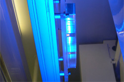
- Refraction Ranger
特殊設計的平行光源可以在光學薄膜上檢測到輕微刮傷、凹痕、膠粒及其他光學膜上典型之缺陷。
- Micro Ranger
不透光的膜類可以使用特殊平行光檢測 2μm 的缺陷。
- 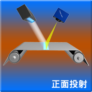
- 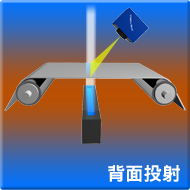
- 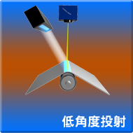
正面投射的投光方式較常應用於不透光材質的檢測，缺陷則是包含 3D 及 2D 的缺陷。
背面投射較常應用於透明及半透明的薄膜，利用BILEVEL技術發現黑點、膠粒、塗佈不均等缺陷。
低角度投射的投光方式則是較常應用於不透明材質，如金屬或是玻璃布的毛羽，缺經緯等。
- 缺陷特性
突起、凹痕、髒污、油墨、油墨不均
- 缺陷特性
破孔、污染物殘留、凝膠、刮痕、變形、薄斑、凝塊
- 缺陷特性
摺痕、裂縫、凸出物、污點、破絲
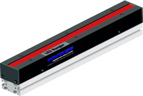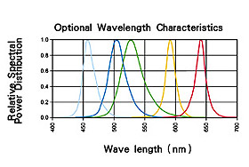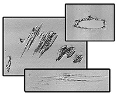LED RANGER 是專為檢測所開發出來的特殊光源，內部的 LED 是採用高效能，高可靠度的晶片。不僅外型輕巧且可無限連結，適合於需要高亮度，高穩定度的客戶端需求。此種光源無需維護，可持續穩定發光達十萬小時。平均亮度約為一般螢光燈的 10 倍左右。
左圖是使用本公司的 LED RANGER 輔以獨特的 BILEVEL 光學成像技術，將缺陷以 3D 立體型態展現，再配合獨特的缺陷分類軟體，可將各類型的缺陷正確的區分。由於其他業者的設備僅能呈現如同 2D 的平面圖形，並無法呈現出如此立體、清晰的缺陷圖形，導致誤判的機率大幅增加。
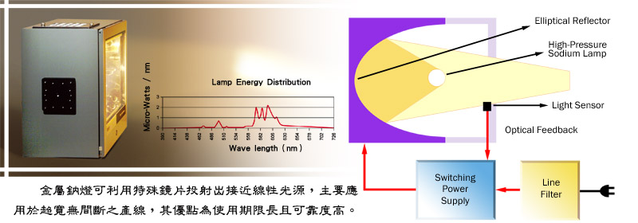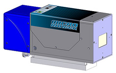此型系統具有獨立 LED 光源，能檢測至 0.05mm 的缺陷，具備光學微調裝置，適合超高解析度使用。
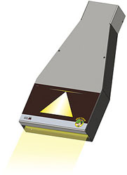此產品專門針對光學膜所應用的特殊光源，能檢出膜面縱向刮傷。原理是利用特殊鏡片將光線集中，任何光線的變化都能輕易被檢出。一般常見的線型光源並無法檢出此類缺陷，因為刮傷的光源偏折會恰好被線型光所填補，因此無法檢測出輕微刮傷。
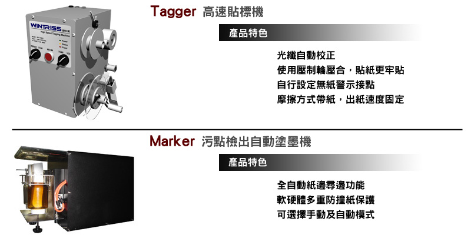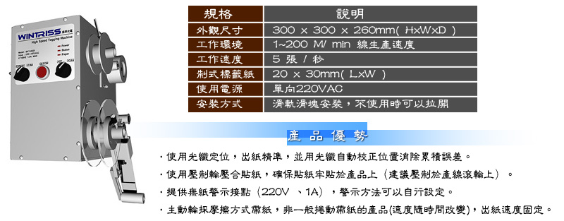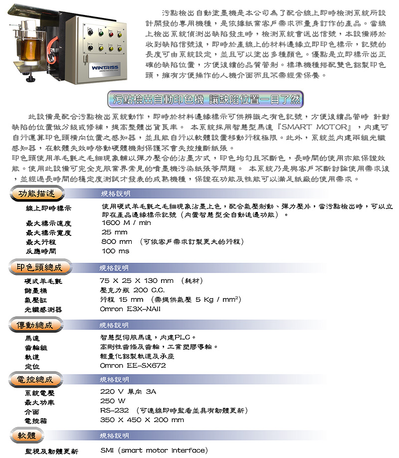